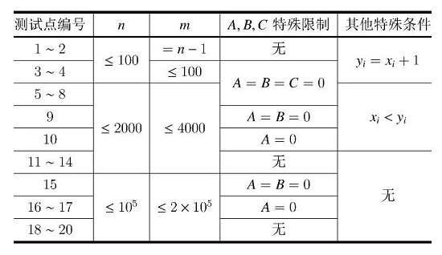

猫国的铁路系统中有 $n$ 个站点，从 $1$ ~ $n$ 编号。小猫准备从 $1$ 号站点出发，乘坐列车回到猫窝所在的 $n$ 号站点。它查询了能够乘坐的列车，这些列车共 $m$ 班，从 $1$ ~ $m$ 编号。小猫将在 $0$ 时刻到达 $1$ 号站点。对于 $i$ 号列车，它将在时刻 $p_i$ 从站点 $x_i$ 出发，在时刻 $q_i$ 直达站点 $y_i$，小猫只能在时刻 $p_i$ 上 $i$ 号列车，也只能在 $q_i$ 时刻下 $i$ 号列车。
小猫可以通过多次换乘到达 $n$ 号站点。一次换乘是指对于两班列车，假设分别为 $u$ 号与 $v$ 号列车，若 $y_u=x_v$ 并且 $q_u \le p_v$，那么小猫可以乘坐完 $u$ 号列车后在 $y_u$ 号站点等待 $p_v-q_u$ 个时刻，并在时刻 $p_v$ 乘坐 $v$ 号列车。
小猫只想回到猫窝并且减少途中的麻烦，对此它用烦躁值来衡量。
形式化地说，若小猫共乘坐了 $k$ 班列车，依次乘坐的列车编号可用序列 $s_1,s_2, \cdots, s_k$ 表示。该方案被称作一条可行的回家路线，当且仅当它满足下列两个条件：
对于该回家路线，小猫得到的烦躁值将为：
$q_{s_k} + (A \cdot p^2_{s_1}+B \cdot p_{s_1} +C)+ \sum^{k-1}_{j=1}(A(p_{s_{j+1}}-q_{s_j})^2 + B(p_{s_{j+1}}-q_{s_j})+C)$
小猫想让自己的烦躁值尽量小，请你帮它求出所有可行的回家路线中，能得到的最小的烦躁值。题目保证至少存在一条可行的回家路线。
第一行五个整数 $n,m,A,B,C$，变量意义见题目描述。
接下来 $m$ 行，第 $i$ 行四个整数 $x_i,y_i,p_i,q_i$，分别表示 $i$ 号列车的出发站、到达站、出发时刻与到达时刻。
输出仅一行一个整数，表示所求的答案。
3 4 1 5 10 1 2 3 4 1 2 5 7 1 2 6 8 2 3 9 10
94
4 3 1 2 3 1 2 2 3 2 3 5 7 3 4 7 9
34
【样例 1 解释】
共有三条可行的回家路线：
第二条路线得到的烦躁值最小为 $94$。
【数据范围与提示】
对于所有测试点：
$2 \le n \le 10^5，1 \le m \le 2 \times 10^5$
$0 \le A \le 10，0 \le B,C \le 10^6$
$1 \le x_i,y_i \le n，x_i \ne y_i，0 \le p_i < q_i \le 10^3$
每个测试点的具体限制见下表：

 Comet OJ
Comet OJ